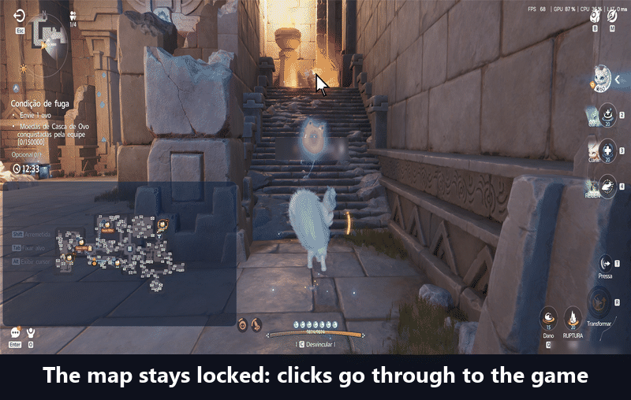
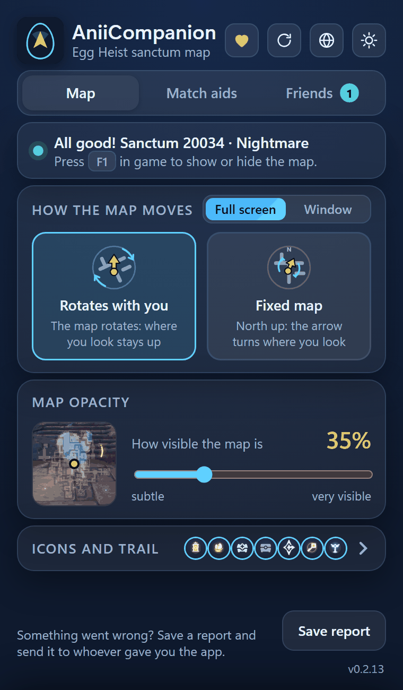
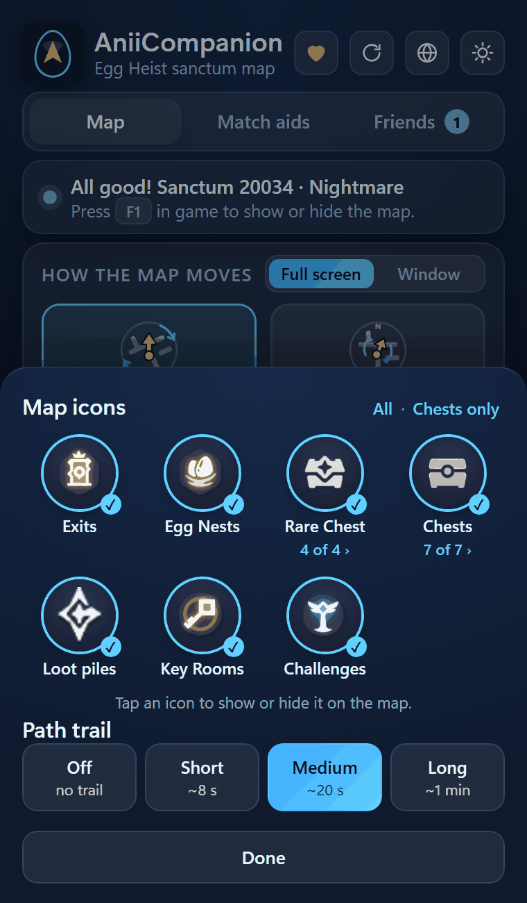
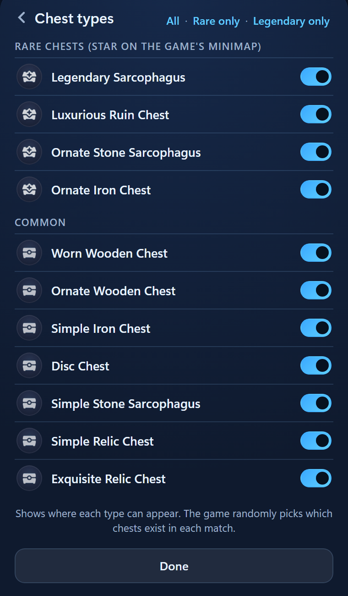

Customize the map
Everything you can change in the app window, from the size of the map to the theme.
“Map” tab
Full screen or small window
The two-sided switch at the top of the “How the map moves” box.
- “Full screen”: the map covers the game screen. Clicks and keys go straight to the game.
- “Window”: a small map in a corner, showing the whole sanctum. You pick the size and the place.
How to move the map window

- Unlock itPress Ctrl + F1 in the game. A bar appears: “Drag to move”.
- Move and resizeDrag the bar to move it. Drag a corner to change the size.
- Lock it againCtrl + F1 once more. Clicks go to the game again, and the app remembers where you left the window.
Shortcuts
| F1 | shows or hides the map |
|---|---|
| Ctrl + F1 | locks and unlocks the map window |
| Ctrl + Shift + F1 | restarts the map, see below |
While AniiCompanion is open, these keys belong to it and do not reach the game.

“Map” tab
How the map moves
In the “How the map moves” box, pick one of the two.
- “Rotates with you”The map turns so that where you look is up. It is the easiest way not to get lost.
- “Fixed map”North is up. The arrow is what turns to where you look.
Icons
Icons and trail
The “Icons and trail” row opens a panel from the bottom.
- Pick the iconsClick an icon to show or hide it on the map: “Exits”, “Egg Nests”, “Rare Chest”, “Chests”, “Loot piles”, “Key Rooms” and “Challenges”. “All” turns them all on and “Chests only” leaves just the chests.
- Pick the trailThe yellow trail shows where you walked: “Off”, “Short” (about 8 s), “Medium” (20 s) or “Long” (1 min).
- Click “Done”The panel closes and the map uses your choice. On the chests, “N of M ›” opens the types, in the next section.

Icons
Chest types
See only the chests that matter, like the Legendary Sarcophagus.

- Open the sheetIn the icons panel, click “N of M ›” under “Rare Chest” or “Chests”.
- Switch types on and offEach type has a switch, in two groups: “Rare Chests (star on the game's minimap)” and “Common”.
| “All” | turns on every type |
|---|---|
| “Rare only” | leaves only the rare ones |
| “Legendary only” | leaves only the Legendary Sarcophagus |
The game draws which chests exist in each match. A dashed ring marks a spot that can also be another type of chest.
“Map” tab
Map opacity
How much of the map you see over the game.
Under “Map opacity”, drag the bar from “subtle” to “very visible”, from 10% to 100%. It starts at 35%.
The small picture next to the bar shows right away how the map looks over a game scene.
“Map” tab
Match difficulty
There is nothing to set: the app finds out on its own.
It reads the coin goal on the game’s panel. If it cannot read it, the sanctum itself tells the difficulty: “Normal”, “Hard”, “Nightmare” or “Chaos”.
You see it on the status card of the app window (“All good! Sanctum 20034 · Nightmare”) and on a label on the map.
Header
Light or dark theme
The sun or moon button in the corner of the header.
Click it to switch between light and dark. By default the app follows the Windows theme.
Header
App language
The globe button, next to the theme.
The first time, the app asks “Which language do you want the app in?” and marks your Windows language. Later, click the globe and pick under “App language”: “Português” or “English”.
The screens reload in the new language. Your match, the map and your friends stay as they are.
Header
Restart the map
When the map looks cut off or stuck.
Press Ctrl + Shift + F1 in the game, or click “Restart map” in the app header. Nests, eggs and chests of the match stay marked.
Footer
Save report
Something went wrong? Click “Save report” in the footer. A .zip file goes to your Downloads folder.
It carries the app’s logs and a few pictures of the game screen. Send it to whoever gave you the app. See also the common problems.
“Match aids” tab
Turn the aids on and off
Every match alert has a switch on the “Match aids” tab. They all start on. See how.